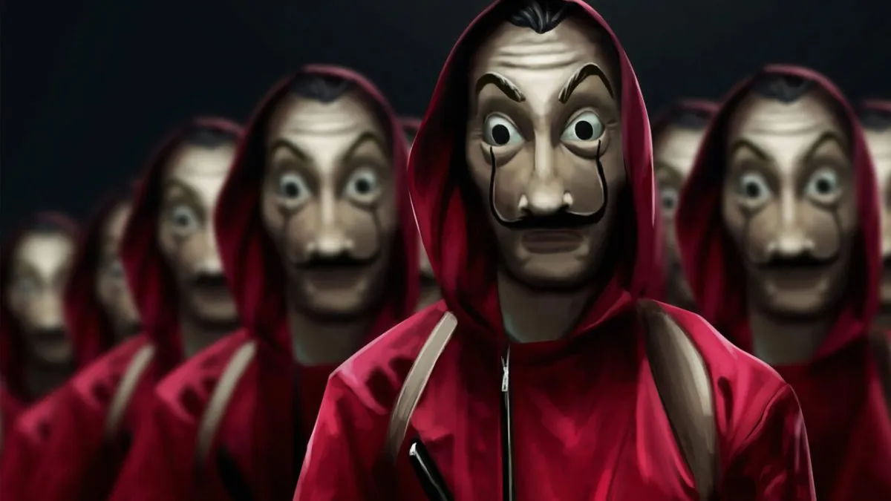
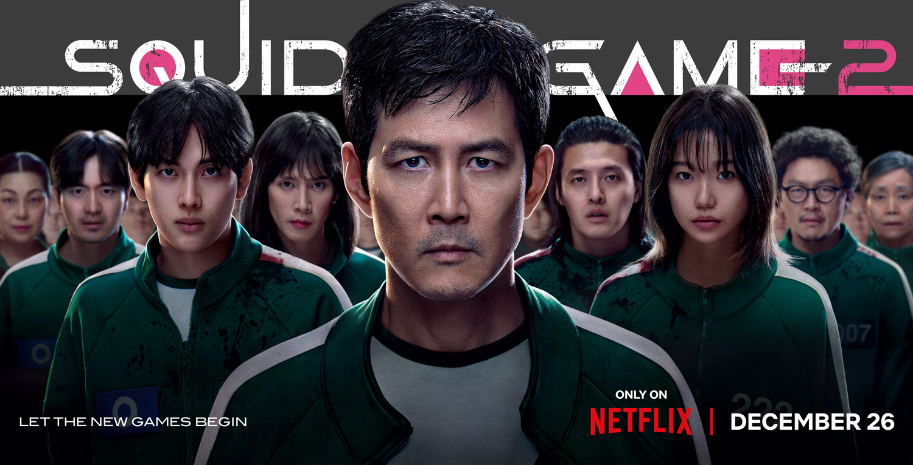
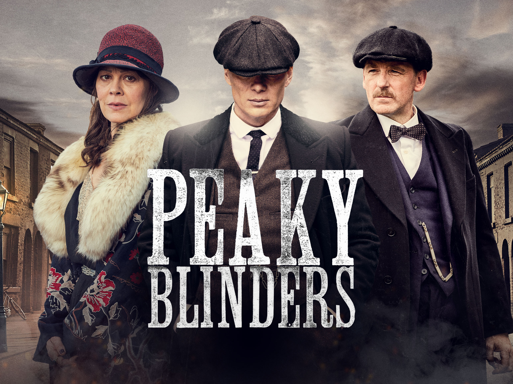

Web Series
Web series offer deep, character-driven narratives that are
perfect for getting lost in a new world. Below are some of the most addictive and well-made series
I've seen.
1.Money Heist

A criminal mastermind who goes by "The Professor" has a plan to pull off the biggest heist in recorded
history -- to print billions of euros in the Royal Mint of Spain.
Genre: Heist, Crime Thriller
Creator: Álex Pina
My Rating: 10/10
"An adrenaline-fueled thriller with brilliant characters and a plot that never stops twisting."
2.Squid Game

Hundreds of cash-strapped contestants accept an invitation to compete in children's games for a tempting
prize, but the stakes are deadly.
Genre: Survival, Thriller, Drama
Creator: Hwang Dong-hyuk
My Rating: 9/10
"A shocking and brutally compelling commentary on society and desperation."
3.Stranger Things

When a young boy vanishes, a small town uncovers a mystery involving secret experiments, terrifying
supernatural forces, and one strange little girl.
Genre: Sci-Fi, Horror, Drama
Creator: The Duffer Brothers
My Rating: 9/10
"A perfect blend of 80s nostalgia, supernatural horror, and heartfelt friendship."
4.Dark

A family saga with a supernatural twist, set in a German town, where the disappearance of two young children
exposes the relationships among four families.
Genre: Sci-Fi, Thriller, Mystery
Creator: Baran bo Odar, Jantje Friese
My Rating: 10/10
"A mind-bending masterpiece of time travel with an incredibly intricate plot."
5.Wednesday

While attending Nevermore Academy, a sleuthing, supernaturally infused mystery charts Wednesday Addams'
years as a student.
Genre: Comedy Horror, Supernatural
Creator: Alfred Gough, Miles Millar
My Rating: 8/10
"A delightfully dark and witty series with a fantastic lead performance."
6.Peaky Blinders

A gangster family epic set in 1900s England, centering on a gang who sew razor blades in the peaks of their caps, and their fierce boss Tommy Shelby.
Genre: Crime, Drama, Historical
Creator: Steven Knight
My Rating: 10/10
"An incredibly stylish and gritty crime drama with a phenomenal lead performance."